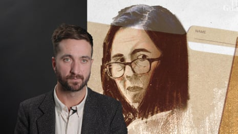

The jury has started deliberations in the triple murder trial of Erin Patterson at the Latrobe Valley law courts in Morwell.
Justice Christopher Beale completed his charge or directions to the jury on Monday.
Patterson, 50, faces three charges of murder and one charge of attempted murder relating to poisoning four in-laws with beef wellington served for lunch at her house in Leongatha on 29 July 2023.
Patterson has pleaded not guilty to murdering her estranged husband Simon Patterson’s parents, Don and Gail Patterson, his aunt Heather Wilkinson, and attempting to murder Ian Wilkinson, Simon’s uncle and Heather’s husband.

Illustration: Guardian Design
The jury of 12 will have to reach a unanimous verdict on each charge. Two other jury members were balloted off shortly before deliberations started.
“A very warm thank you to those two people who will be balloted off,” Beale said.
“I don’t know whether you will feel relieved or frustrated, but be assured you have made an important contribution to the administration of justice by being on this jury.
- Sign up for Guardian Australia’s breaking news email
“I am very grateful for it, and I think the community will be very grateful for it.”
The two jurors who were balloted off were young men, leaving five women and seven men.
Jurors have been told they will be sequestered during their deliberations, meaning they will return to supervised accommodation each night to ensure they have no contact with the outside world.
By the time two jurors were balloted off, the court room was at capacity.
Ian Wilkinson, the sole surviving lunch guest , sat stoically in the back row of the court – where he has observed the trial since he concluded testifying in week two.

Ian Wilkinson, the sole surviving lunch guest.Photograph: James Ross/AAP
Patterson, dressed in a white top with black stripes, watched as the 12 jurors who will determine her fate left the court room just after 1pm.
It is the 10th week of a supreme court trial that had been expected to be completed in five to six weeks.
Beale started his charge on Tuesday, saying he expected it would take two days. His charge had three parts: directions regarding the principles of law that apply to the case; the evidence in the case and details about the requirement for the verdicts to be unanimous; and the procedure that would be followed to reach these verdicts.
He also told the jury to put aside any sympathy they may feel for Patterson’s lunch guests and continue to ignore the unprecedented media attention surrounding the case.
His charge, which was 365 pages, was delivered on the 40th day of the trial.
Of motive, Beale told the jury that the prosecution did not have to present a motive for the alleged murders in order for Patterson to be found guilty.
“Some murders occur for no apparent reason,” he said.
“The prosecution concede there is no evidence of a motive for the accused to have murdered her lunch guests.”
Beale said that the defence, in fact, argued that Patterson had a motive not to kill her lunch guests.
Closing arguments conclude in Australia's mushroom trial as jury deliberation approaches – video
Beale directed the jury to take the absence of evidence of motive in Patterson’s favour, and said that if they accepted the defence argument about her having a motive for the lunch guests to stay alive, that was “significant”.
“If you find the accused … had a motive to not kill her lunch guests, that is a significant consideration you must have regard to.”
He told the jury that they would inform the court’s tipstaff they had reached verdicts or had a question by pressing a buzzer in the jury room.
But he made clear he did not want to know what the jury numbers were in relation to the verdicts at any stage.
“Let’s say theoretically that seven are thinking one way, and five the other, I don’t want to hear about it,” Beale said.